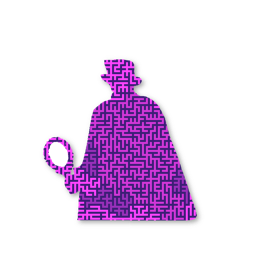

Taihaa
The high precision fate analysis engine.
Taihaa is a high precision fate bone weight calculator, high precision fate analysis engine, high accuracy fate telling app, a serious app developed just for fun.
Why
There're so many online fate telling site, but they are not rigorous, serious! Incorrect birth date calculation, incorrect birth eight-character calculation, incorrect fate bone weight calculation, incorrect big luck years calculation, etc. The calculation basis is wrong, and all of the conclusion are wrong, just used to fooling people.
How the conclusions in the fate analysis report calculated?
1. A high precision calculator that can convert from solar calendar to lunar calendar or vice versa accurate at one second.
2. A high precision fate eight-character calculator that many missing rules in common method applied.
3. Calculate big lucky years based on very accurate time value of 24 solar terms, that must be accurate to one second.
To get the above accurate time values it requires very big calculation and following many rules. The astronomical data of the 24 solar terms are calculated based on astronomical data provided by the Royal Nautical Almanac and the US Navy Astronomical Meteorological Station.
Intellectual Property Transfer
Taihaa has a built-in fate analysis engine that can be developed as fate telling device. This solution is specially designed for embedded systems and it can be developed as standalone machine or handheld device. The engine is completely developed with ANSI C that has a very small size and includes a fate analysis engine and a PDF document printing engine. The business prospects of this system are very broad, and the economic benefits are huge. The device is suitable to installed in various entertainment places. Consumers only needs to scan the CR code with their mobile phone and then the machine can print beautifully paper report. If you are interested in using the source code of the engine to develop commercial product, please contact us for more details.
Taihaa「睇哈」
嚴謹的命理分析工具
Taihaa「睇哈」 是一個特意為需要進行祿命分析的人而開發的命術分析工具軟體。該軟體提供八字計算，命數骨重計算、四柱分析、達摩一掌經、紫微斗數及演禽理數，並提供命理相關基本資訊和相應分析，如出生時日五行屬性、星座、性格為人、先天命勢、大運年份、流年運勢、命格分析等相關信息。開發該工具軟體以方便使用者進行便捷的命理計算和分析。 該軟體純屬休閒娛樂性質，切勿盲目迷信。
Why
網路上有很多算命的軟體，但係佢哋並唔嚴謹，嚴肅！ 出生日期計算錯著，生辰八字計算錯著，命骨計算錯著，大運年份計算錯誤等。 計算依據係錯的，所有的結論也都係陰人嘅，都係錯的。

If you can't open the link above, please launch App Store and found Taihaa by searching.
命術分析結論是如何計算得到的？
1. 高精度公曆與農曆轉換器，日期計算器，要求高精度計算。精確到秒。
2. 高精度八字計算器。包含應用到一些普通算法沒有的規則。
3. 根據高精準的農曆24節氣計算大運年月，精確到秒。
要獲得上述這些準確的時間值，需要進行大量計算並遵循許多規則。 二十四節氣的天文資料是根據英國皇家航海曆書局及美國海軍天文氣象台提供的天文數據計算。
Screenshots


輸入
1. 首先請確認出生日期是使用西曆還是農曆。
2. 其次請確認性別、出生年月日和準確的時辰(應特別注意夏令時間)。
3. 點擊  即可生成「命術分析報告」。
即可生成「命術分析報告」。
年齡
1. 系統默認使用「今年」進行流年分析。
2. 輸入特定年齡，系統則使用該年齡進行流年分析。
3. 不輸入年齡，系統則使用「今年」進行流年分析。
列印
1. 點擊  即可將「命術分析報告」保存到指定目錄，該文件為PDF格式。
即可將「命術分析報告」保存到指定目錄，該文件為PDF格式。
2. 第一步保存報告文件後，則可隨時將報告列印成紙制文件以方便解讀。
商務合作-智慧財產權轉讓

命理分析機模型
本解決方案特意為嵌入式系統而設計，產品可以設計為台式設備或便捷式手持設備，引擎完全採用ANSI C開發，體積小巧，包含命術分析引擎，PDF文檔列印引擎，可以非常方便而快速地開發出消費娛樂設備，如上圖所示。本系統商業前景廣闊，經濟效益巨大，設備適合安置於各種娛樂場所，消費者只需用手機掃描CR碼該機即可列印出精美的「命術分析報告」。本引擎將以源代碼方式進行一次性產權轉讓(出售)，因此購買者可以擁有最大的權利，如有意購買，請進一步聯繫了解詳情。
贈言
天生我材必有用，小富由人靠勤勞。
爛命衰運皆可改，養性修身福壽長。
心性平和天地寬，與人為善好運來。
好命爛命都一天，何不開心過一天。
引用
Tungsyu「通書」, 農曆資訊查詢工具。 The Calendar of Yangtze River.